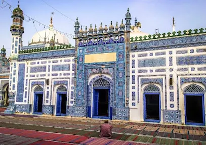

Sacred Heritage · Matiari
Shah Abdul Latif Bhittai
Major heritage site
Matiari · Sindh
The shrine of Sindh's poet-saint brings together a mausoleum, mosque and courtyard adorned with local tilework and decorative craft.

Place & context
A closer look
- Heritage category
- Sacred Heritage
- Designation
- Major heritage site
- Province / Region
- Sindh
- District
- Matiari
- Legal status
- Not Protected
As recorded in the cited DOAM catalogue; not an independent review of current legislation.